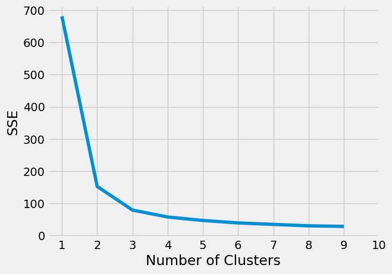
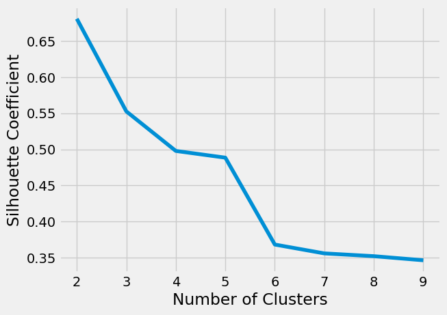
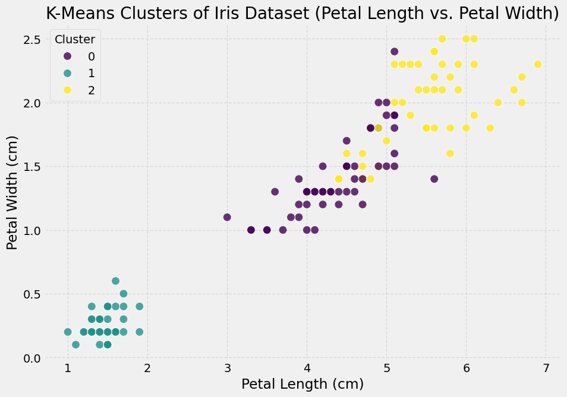

import random
import numpy as np
import matplotlib.pyplot as plt
from sklearn.cluster import KMeans
import pandas as pd
%matplotlib inlineK-Means Clustering
This notebook captures the seminar activity for unit 6 where k-means clustering was performed on the iris.csv data set.
The data was examined, categorical columns excluded and NaN / infinite values procesed before undertaking K-Means Clustring. Various k values were used, however k = 3 was determined to be the most appropriate given that firstly, we have knowledge of the datset and know that there are 3 species of iris, and secondly that we are examining potential differences in petal and sepal size between the 3 species.
The notebook below contains the coding for the above task with text covering logic behind the steps undertaken, observations, reflections and conclusions.
df = pd.read_csv('Unit06 iris.csv')df.head()| sepal_length | sepal_width | petal_length | petal_width | species | |
|---|---|---|---|---|---|
| 0 | 5.1 | 3.5 | 1.4 | 0.2 | setosa |
| 1 | 4.9 | 3.0 | 1.4 | 0.2 | setosa |
| 2 | 4.7 | 3.2 | 1.3 | 0.2 | setosa |
| 3 | 4.6 | 3.1 | 1.5 | 0.2 | setosa |
| 4 | 5.0 | 3.6 | 1.4 | 0.2 | setosa |
Drop catagorical column ‘species’
df = df.drop('species', axis=1)Normalise the data set
from sklearn.preprocessing import StandardScaler
X = df.values[:,1:]
X = np.nan_to_num(X)
Clus_dataSet = StandardScaler().fit_transform(X)from sklearn.cluster import KMeans
clusterNum = 3
k_means = KMeans(init = "k-means++", n_clusters = clusterNum, n_init = 12)
k_means.fit(X)
labels = k_means.labels_
print(labels)[1 1 1 1 1 1 1 1 1 1 1 1 1 1 1 1 1 1 1 1 1 1 1 1 1 1 1 1 1 1 1 1 1 1 1 1 1
1 1 1 1 1 1 1 1 1 1 1 1 1 0 0 0 0 0 0 0 0 0 0 0 0 0 0 0 0 0 0 0 0 0 0 0 0
0 0 0 2 0 0 0 0 0 2 0 0 0 0 0 0 0 0 0 0 0 0 0 0 0 0 2 2 2 2 2 2 0 2 2 2 2
2 2 2 2 2 2 2 2 0 2 2 2 0 2 2 0 2 2 2 2 2 2 2 2 2 2 2 0 2 2 2 2 2 2 2 2 2
2 2]Species was dropped earlier as it was a categorical value, but now we need to compare the assigned cluster to the species. Should instead have kept the species column and excluded the values for this (last) column.
df['cluster_km'] = labels
display(df.head())| sepal_length | sepal_width | petal_length | petal_width | cluster_km | |
|---|---|---|---|---|---|
| 0 | 5.1 | 3.5 | 1.4 | 0.2 | 1 |
| 1 | 4.9 | 3.0 | 1.4 | 0.2 | 1 |
| 2 | 4.7 | 3.2 | 1.3 | 0.2 | 1 |
| 3 | 4.6 | 3.1 | 1.5 | 0.2 | 1 |
| 4 | 5.0 | 3.6 | 1.4 | 0.2 | 1 |
Reloading data and re-running clustering to compare with original species
df = pd.read_csv('Unit06 iris.csv')
# Prepare the features (excluding 'species') for clustering
X = df.iloc[:, :-1].values # All columns except the last one (species)
X = np.nan_to_num(X)
# Standardize the data
scaler = StandardScaler()
Clus_dataSet = scaler.fit_transform(X)
# Apply KMeans clustering
k_means = KMeans(init = "k-means++", n_clusters = 3, n_init = 12)
k_means.fit(Clus_dataSet)
labels = k_means.labels_
# Add the cluster labels back to the original DataFrame
df['cluster_km'] = labels
display(df.head())| sepal_length | sepal_width | petal_length | petal_width | species | cluster_km | |
|---|---|---|---|---|---|---|
| 0 | 5.1 | 3.5 | 1.4 | 0.2 | setosa | 1 |
| 1 | 4.9 | 3.0 | 1.4 | 0.2 | setosa | 1 |
| 2 | 4.7 | 3.2 | 1.3 | 0.2 | setosa | 1 |
| 3 | 4.6 | 3.1 | 1.5 | 0.2 | setosa | 1 |
| 4 | 5.0 | 3.6 | 1.4 | 0.2 | setosa | 1 |
Compare labels with species by cross-tabulation
comparison_table = pd.crosstab(df_original['species'], df_original['cluster_km'])
display(comparison_table)| cluster_km | 0 | 1 | 2 |
|---|---|---|---|
| species | |||
| setosa | 0 | 50 | 0 |
| versicolor | 11 | 0 | 39 |
| virginica | 36 | 0 | 14 |
The results suggest that with three clusters, the setosa species forms a clear distinct cluster (1). versicolor and viginica do not form such distict clusters and overlap is seen, however majority of viginica are in cluster 0 and versicolor are in cluster 2.
Plot the sum of squared errors to investigate optimal value for k
sse = []
for k in range(1, 10):
kmeans = KMeans(n_clusters=k, init= "k-means++",n_init= 12,max_iter= 300)
kmeans.fit(X)
sse.append(kmeans.inertia_)plt.style.use("fivethirtyeight")
plt.plot(range(1, 10), sse)
plt.xticks(range(1, 11))
plt.xlabel("Number of Clusters")
plt.ylabel("SSE")
plt.show()
SSE suggests k=2 or k=3 would be optimal. In thia dataset however we already have the knowledge that there are 3 different species, so k=3 would be used in order to see if we can seperate these based on sepal and petal size.
Further investigate this with a silhouette analysis (to practice generating this graph)
from sklearn.metrics import silhouette_score, silhouette_samples
silhouette_coefficients = []
for k in range(2, 10):
kmeans = KMeans(n_clusters=k, init= "k-means++",n_init= 12,max_iter= 300)
kmeans.fit(X)
score = silhouette_score(X, kmeans.labels_)
silhouette_coefficients.append(score)
silhouette_coefficients[np.float64(0.6808136202936816),
np.float64(0.5525919445499757),
np.float64(0.4978256901095472),
np.float64(0.4885175508886279),
np.float64(0.36820569682713084),
np.float64(0.3559677254550641),
np.float64(0.3521090401515315),
np.float64(0.3464376485899385)]plt.style.use("fivethirtyeight")
plt.plot(range(2, 10), silhouette_coefficients)
plt.xticks(range(2, 10))
plt.xlabel("Number of Clusters")
plt.ylabel("Silhouette Coefficient")
plt.show()
Visualizing the clusters based on petal size
import seaborn as snsplt.figure(figsize=(10, 7))
sns.scatterplot(
x='petal_length',
y='petal_width',
hue='cluster_km',
data=df,
palette='viridis',
s=100,
alpha=0.8
)
plt.title('K-Means Clusters of Iris Dataset (Petal Length vs. Petal Width)')
plt.xlabel('Petal Length (cm)')
plt.ylabel('Petal Width (cm)')
plt.legend(title='Cluster')
plt.grid(True, linestyle='--', alpha=0.6)
plt.show()
Based on petal size only it can be seen that cluster 1 (setosa) forms a distinct cluster with smaller petal size compared to cluster 0 and 2. Whilst cluster 2 tends to have the larger petal length and width there is some cross over seen with cluster 0.